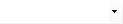
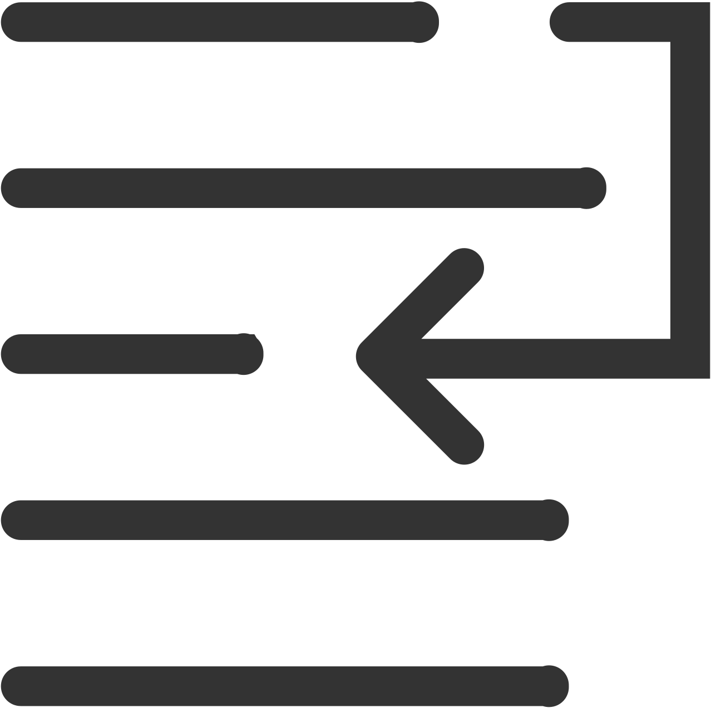

Output Pad
The Output pad can display the status messages for various features in the development environment. To open the pad click on in the main menu bar.
By default it is positioned in the lower center.
Output data that has been selected in the display list are shown in the output area.
Toolbar
|
Icon |
Function |
Description |
|---|---|---|
|
 |
Display output from |
Shows one or more output areas for viewing. Several information areas are available depending on which tools have been displayed in the IDE user messages in the Output pad. |
|
|
Clear All |
Deletes the entire text from the output area. |
|
 |
Toggle Word Wrap |
Turns the line break feature in the output area on and off. When the line break function is active, long text that exceeds the display area wraps to the next line. |

To adjust font and text size settings click on the File menu, and in the Backstage select .
Content Scrolling
Each new status message displayed by the Output pad is added at the bottom of the list, below the ones already displayed. By default, the Output pad displays the most recent status messages. The Output pad is then by default automatically scrolling down the list.
This automatic scroll down is stopped when the user:
-
Clicks anywhere inside the Output pad.
-
Moves up the scroll handle of the Output pad.
-
Scrolls up the Output pad with the mouse wheel.
When the automatic scroll down is stopped, the new status messages are still added at the bottom of the list. However the list is not anymore automatically scrolled down to display them. The list remains at the position set by the user.
To resume the automatic scroll down, the user can either:
-
Move to the bottom of the list with the scroll handle of the Output pad.
-
Scroll to the bottom of the Output pad list with the mouse wheel.
-
Use the shortcut Ctrl + End to automatically bring to the bottom the Output pad.